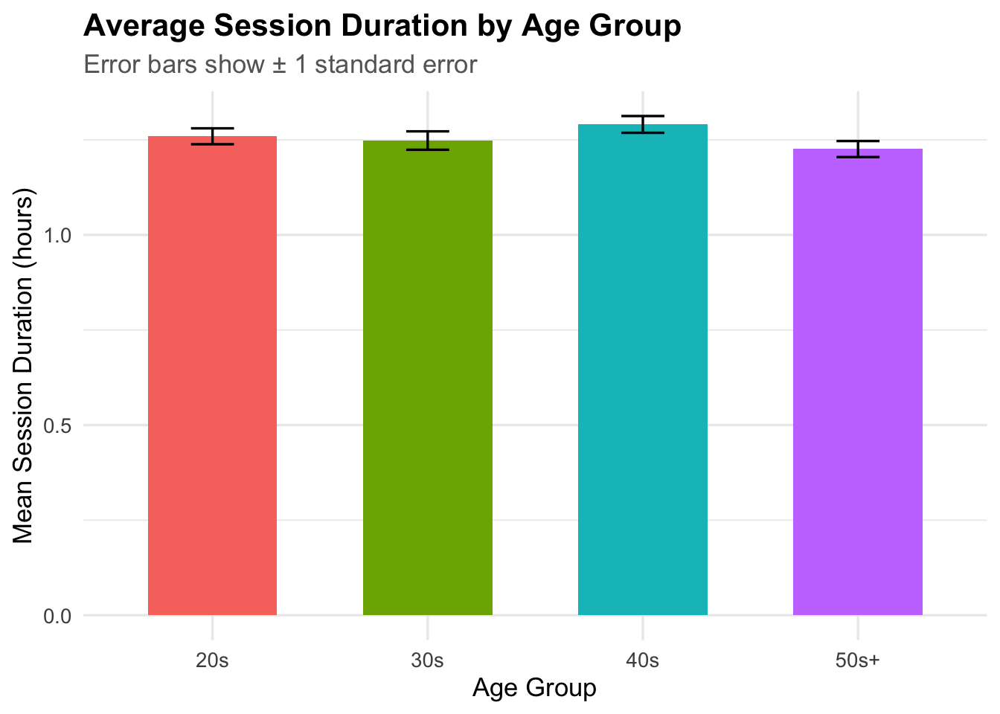
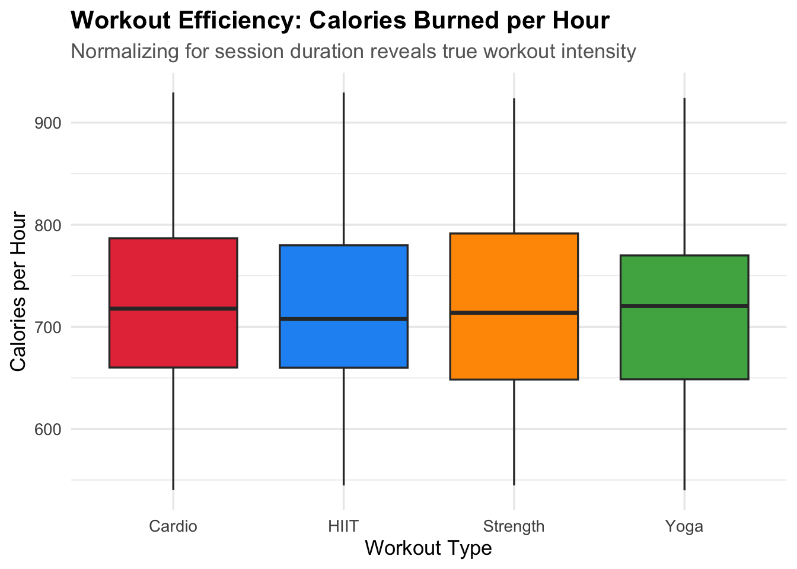
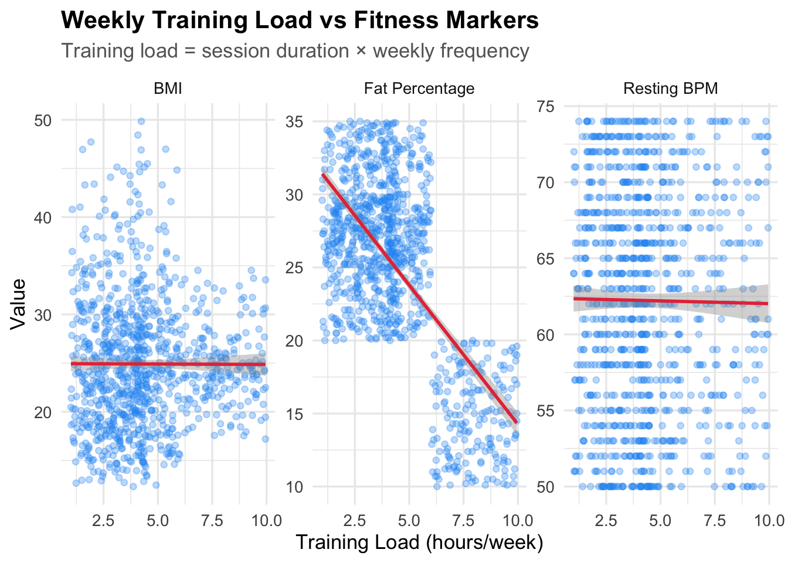

Code
set.seed(42)
library(tidyverse)
project_theme <- theme_minimal(base_size = 13) +
theme(
plot.title = element_text(face = "bold"),
plot.subtitle = element_text(color = "gray40"),
legend.position = "bottom"
)set.seed(42)
library(tidyverse)
project_theme <- theme_minimal(base_size = 13) +
theme(
plot.title = element_text(face = "bold"),
plot.subtitle = element_text(color = "gray40"),
legend.position = "bottom"
)This dataset was obtained from Kaggle (Vala Khorasani, “Gym Members Exercise Dataset”, 2024: https://www.kaggle.com/datasets/valakhorasani/gym-members-exercise-dataset). It contains 973 observations of gym members’ workout sessions across 15 variables, including physiological metrics (age, weight, BMI, heart rate), session characteristics (duration, calories burned, workout type), and self-reported behaviors (water intake, workout frequency). The dataset was selected from Discussion 5A and stored as a flat .csv file prior to any transformation.
gym_raw <- read_csv("gym_members_exercise_tracking.csv")
glimpse(gym_raw)Rows: 973
Columns: 15
$ Age <dbl> 56, 46, 32, 25, 38, 56, 36, 40, 28, 28…
$ Gender <chr> "Male", "Female", "Female", "Male", "M…
$ `Weight (kg)` <dbl> 88.3, 74.9, 68.1, 53.2, 46.1, 58.0, 70…
$ `Height (m)` <dbl> 1.71, 1.53, 1.66, 1.70, 1.79, 1.68, 1.…
$ Max_BPM <dbl> 180, 179, 167, 190, 188, 168, 174, 189…
$ Avg_BPM <dbl> 157, 151, 122, 164, 158, 156, 169, 141…
$ Resting_BPM <dbl> 60, 66, 54, 56, 68, 74, 73, 64, 52, 64…
$ `Session_Duration (hours)` <dbl> 1.69, 1.30, 1.11, 0.59, 0.64, 1.59, 1.…
$ Calories_Burned <dbl> 1313, 883, 677, 532, 556, 1116, 1385, …
$ Workout_Type <chr> "Yoga", "HIIT", "Cardio", "Strength", …
$ Fat_Percentage <dbl> 12.6, 33.9, 33.4, 28.8, 29.2, 15.5, 21…
$ `Water_Intake (liters)` <dbl> 3.5, 2.1, 2.3, 2.1, 2.8, 2.7, 2.3, 1.9…
$ `Workout_Frequency (days/week)` <dbl> 4, 4, 4, 3, 3, 5, 3, 3, 4, 3, 2, 3, 3,…
$ Experience_Level <dbl> 3, 2, 2, 1, 1, 3, 2, 2, 2, 1, 1, 2, 2,…
$ BMI <dbl> 30.20, 32.00, 24.71, 18.41, 14.39, 20.…cat("Rows:", nrow(gym_raw), "| Columns:", ncol(gym_raw), "\n")Rows: 973 | Columns: 15 head(gym_raw, 6)# A tibble: 6 × 15
Age Gender `Weight (kg)` `Height (m)` Max_BPM Avg_BPM Resting_BPM
<dbl> <chr> <dbl> <dbl> <dbl> <dbl> <dbl>
1 56 Male 88.3 1.71 180 157 60
2 46 Female 74.9 1.53 179 151 66
3 32 Female 68.1 1.66 167 122 54
4 25 Male 53.2 1.7 190 164 56
5 38 Male 46.1 1.79 188 158 68
6 56 Female 58 1.68 168 156 74
# ℹ 8 more variables: `Session_Duration (hours)` <dbl>, Calories_Burned <dbl>,
# Workout_Type <chr>, Fat_Percentage <dbl>, `Water_Intake (liters)` <dbl>,
# `Workout_Frequency (days/week)` <dbl>, Experience_Level <dbl>, BMI <dbl>Step 1 adds a unique ID to each member so every row can be traced back to its original member after reshaping.
gym_raw <- gym_raw |>
mutate(member_id = row_number())Step 2 renames all 15 columns to clean snake_case, removing spaces and parentheses from the original column names.
gym_clean <- gym_raw |>
rename(
age = Age,
gender = Gender,
weight_kg = `Weight (kg)`,
height_m = `Height (m)`,
max_bpm = Max_BPM,
avg_bpm = Avg_BPM,
resting_bpm = Resting_BPM,
session_duration_h = `Session_Duration (hours)`,
calories_burned = Calories_Burned,
workout_type = Workout_Type,
fat_pct = Fat_Percentage,
water_intake_l = `Water_Intake (liters)`,
workout_freq = `Workout_Frequency (days/week)`,
experience_level = Experience_Level,
bmi = BMI
)Step 3 reshapes from wide to long format using pivot_longer(). Each member now has one row per metric instead of one row with 15 columns.
gym_long <- gym_clean |>
pivot_longer(
cols = -c(member_id, gender, workout_type, experience_level),
names_to = "metric",
values_to = "value"
)Step 4 normalizes variable types — metric names are lowercased, values are forced to numeric, and experience level is converted to an ordered factor so plots sort correctly.
gym_long <- gym_long |>
mutate(
metric = str_to_lower(metric),
value = as.numeric(value),
experience_level = factor(experience_level,
levels = c(1, 2, 3),
labels = c("Beginner", "Intermediate", "Advanced"),
ordered = TRUE)
)Step 5 checks for and removes missing values. The dataset contains no NAs — all 11,676 rows are retained after reshaping (973 members × 12 numeric metrics each).
na_count <- gym_long |>
summarise(total_missing = sum(is.na(value)))
cat("Missing values before cleaning:", na_count$total_missing, "\n")Missing values before cleaning: 0 gym_tidy <- gym_long |>
drop_na(value)
cat("Rows after cleaning:", nrow(gym_tidy), "\n")Rows after cleaning: 11676 Analysis prep pivots back to wide format for plotting and adds two derived variables: age_group buckets members into decades, and training_load combines session duration and weekly frequency into a single weekly volume estimate.
gym_wide <- gym_tidy |>
pivot_wider(names_from = metric, values_from = value)
gym_wide <- gym_wide |>
mutate(
age_group = cut(age,
breaks = c(18, 30, 40, 50, 100),
labels = c("20s", "30s", "40s", "50s+"),
right = FALSE),
experience_level = factor(experience_level,
levels = c(1, 2, 3),
labels = c("Beginner", "Intermediate", "Advanced"),
ordered = TRUE),
calories_per_hour = calories_burned / session_duration_h
)duration_by_age <- gym_wide |>
group_by(age_group) |>
summarise(
mean_duration = mean(session_duration_h, na.rm = TRUE),
se = sd(session_duration_h, na.rm = TRUE) / sqrt(n())
)
ggplot(duration_by_age,
aes(x = age_group, y = mean_duration, fill = age_group)) +
geom_col(width = 0.6, show.legend = FALSE) +
geom_errorbar(aes(ymin = mean_duration - se,
ymax = mean_duration + se),
width = 0.2) +
labs(
title = "Average Session Duration by Age Group",
subtitle = "Error bars show ± 1 standard error",
x = "Age Group",
y = "Mean Session Duration (hours)"
) +
project_theme
##Workout Efficiency:
ggplot(gym_wide,
aes(x = workout_type, y = calories_per_hour, fill = workout_type)) +
geom_boxplot(show.legend = FALSE) +
scale_fill_manual(values = c(
"Cardio" = "#E63946",
"HIIT" = "#2196F3",
"Strength" = "#FF9800",
"Yoga" = "#4CAF50"
)) +
labs(
title = "Workout Efficiency: Calories Burned per Hour",
subtitle = "Normalizing for session duration reveals true workout intensity",
x = "Workout Type",
y = "Calories per Hour"
) +
project_theme
Workout Efficiency: When calories burned are normalized by session duration to produce a calories-per-hour metric, all four workout types show nearly identical median efficiency at approximately 720 calories per hour. This reveals that the apparent calorie advantage of HIIT and Cardio in raw totals is largely explained by longer average session durations rather than greater intensity per hour. No single workout type is meaningfully more efficient than another in this dataset, suggesting that consistency and duration matter more than workout type for total calorie expenditure.
Weekly Training Load:
gym_wide <- gym_wide |>
mutate(
age_group = cut(age,
breaks = c(18, 30, 40, 50, 100),
labels = c("20s", "30s", "40s", "50s+"),
right = FALSE),
experience_level = factor(experience_level,
levels = c(1, 2, 3),
labels = c("Beginner", "Intermediate", "Advanced"),
ordered = TRUE),
calories_per_hour = calories_burned / session_duration_h,
training_load = session_duration_h * workout_freq
)gym_wide |>
select(training_load, resting_bpm, fat_pct, bmi) |>
pivot_longer(
cols = -training_load,
names_to = "metric",
values_to = "value"
) |>
mutate(metric = recode(metric,
"resting_bpm" = "Resting BPM",
"fat_pct" = "Fat Percentage",
"bmi" = "BMI"
)) |>
ggplot(aes(x = training_load, y = value)) +
geom_point(alpha = 0.3, size = 1.5, color = "#2196F3") +
geom_smooth(method = "lm", se = TRUE, color = "#E63946", linewidth = 1) +
facet_wrap(~ metric, scales = "free_y") +
labs(
title = "Weekly Training Load vs Fitness Markers",
subtitle = "Training load = session duration × weekly frequency",
x = "Training Load (hours/week)",
y = "Value"
) +
project_theme
When combining session duration and workout frequency into a single training load score, a clear pattern emerges for body fat. Members with low training loads (~2 hours/week) average around 31% body fat, while those with high training loads (~10 hours/week) average around 14%. That is a 17 point drop
the strongest trend in the entire dataset. BMI and resting heart rate show no such pattern, suggesting that how much you train per week matters for body composition but not for heart rate metrics.
Age and Session Duration: Members of all ages work out for roughly the same amount of time — around 1.2 to 1.3 hours per session. Age does not affect how long someone stays at the gym.
Workout Efficiency: Once you account for session length, all four workout types burn about the same calories per hour — around 720. HIIT and Cardio only looked better before because those sessions are longer on average, not because they work harder. The type of workout matters less than how long you do it.
Weekly Training Load: Members who train more hours per week have significantly lower body fat. Those training around 2 hours per week average 31% body fat, while those training around 10 hours per week average just 14%. That is a 17 point difference and the clearest finding in the dataset. Interestingly, BMI and resting heart rate barely change no matter how much someone trains, meaning total weekly exercise predicts body fat but not heart rate.